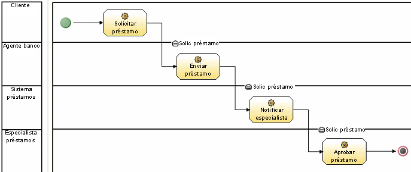
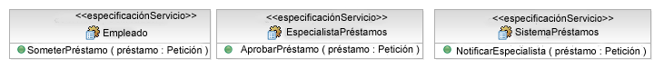
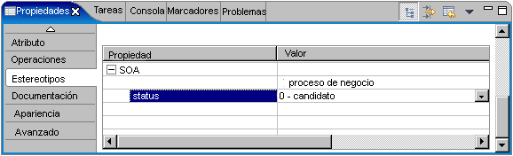
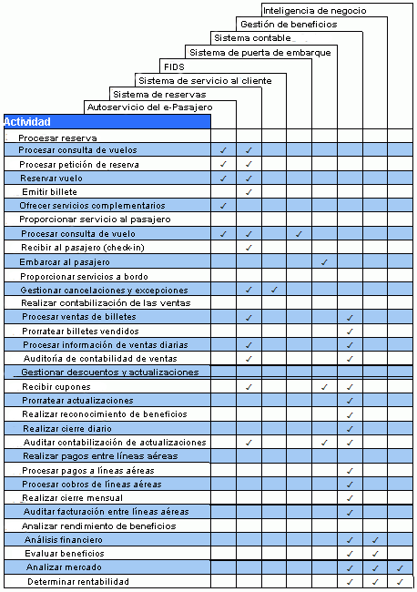

Al tratar la alineación empresarial de servicios en la Directriz:
Servicio, se habló de la conexión entre modelos empresariales e identificación de servicios. En general, este
enfoque proporciona una conexión muy estrecha entre interesados/usuarios de la empresa y servicios de implementación de
la organización de TI permitiendo que las operaciones de servicio diesen directamente soporte a las tareas
identificadas en los modelos de proceso. En general, los modelos de proceso empresarial se centran en tareas realizadas
por roles y/o recursos de una organización para conseguir algún objetivo, normalmente para suministrar valor en forma
de producto o servicio a una parte externa como un cliente o un socio. El proceso global es por tanto un conjunto
solicitado de dichas tareas, posiblemente descompuesto en subprocesos. Tiene asociado modelos de organización, recursos
y datos para capturar todos los aspectos del proceso, lo que incluye no sólo roles de rendimiento, sino recursos
necesarios/utilizados, propiedad de recursos, contabilidad, definiciones de elementos incluidos o sacados de tareas,
etc. El Concepto: Descomposición de proceso empresarial describe cómo alcanzamos un
nivel de descripción de un modelo de proceso empresarial en el que es posible identificar servicios candidatos, tal
como se muestra en el siguiente ejemplo. Dependiendo del nivel de granularidad del Artefacto: Modelo de guión de uso empresarial, puede que sea
necesario ajustar los guiones de uso empresariales, para poder alcanzar el nivel de
descomposición en el que se puede producir un modelo de proceso útil.
A continuación se muestra un modelo de proceso muy simple que utiliza IBM WebSphere Business Integration Modeler.

En este caso, cada división horizontal representa un rol particular que realiza tareas en el proceso. El proceso se
inicia con el círculo verde, finaliza con el círculo resaltado en rojo y tiene flujos de datos entre tareas (en forma
de una solicitud de préstamo). Este proceso, aunque obviamente trivial y artificioso, muestra el nivel alto de tareas.
Pueden ser acciones atómicas desde un punto de vista empresarial pero obviamente requerirían un número de pasos al
descomponerse en el nivel de TI. En general, en el desarrollo orientado a objetos de desarrollo basado en componentes,
trataríamos cada tarea individual desde el punto de vista empresarial como un guión de uso en la vista de TI y lo
descompondríamos en conjuntos de componentes y clases para crear la implementación del guión de uso.
En una solución orientada a servicios, el servicio se identifica en un nivel parecido de granularidad. Normalmente se
presupone que las operaciones de una especificación de servicio se corresponderán 1:1 con las tareas atómicas
identificadas en un modelo de proceso empresarial. Aunque se trata de un enfoque atractivo y, si se realiza bien, puede
concluir con los resultados correctos, también tiende a conducir a la suposición de que una vez identificados dichos
servicios, se podrán implementar directamente tal como se describen en el modelo de proceso. En concreto, cada rol
(división) se convertirá en un servicio con nombre con cada tarea dentro de la división creada como una operación en el
servicio correspondiente, como se puede ver en el siguiente diagrama.

Lo que este enfoque no consigue tener en cuenta es que existen requisitos no funcionales que afectan al tipo de
servicio que se va a desarrollar, al modo en que se identifican las operaciones en los servicios, etc. El nivel de
detalle normalmente capturado por dichas herramientas tiende a no incluir suficiente como para capturar políticas de
seguridad, de calidad de servicio o de gestionabilidad, por ejemplo. La transformación del proceso en un conjunto de
especificaciones de servicios candidatos de un modelo de servicio proporciona un punto de partida pero deberían
tenerse en cuenta sólo como punto de partida desde el cual realizar posteriormente un análisis antes de que se
desarrolle el modelo de diseño que describe la implementación real. Por tanto, todos estos servicios deberían tener su
estado establecido en "candidato", tal como se ve en esta vista de la vista de propiedades de Rational Software
Modeler.

Representación alternativa
Si se utiliza un formato más centrado en documento para el modelo de servicio, puede que sea más adecuado capturar la
correlación entre tareas de proceso y servicio utilizando un formato tabular. El siguiente ejemplo muestra este posible
formato.

|